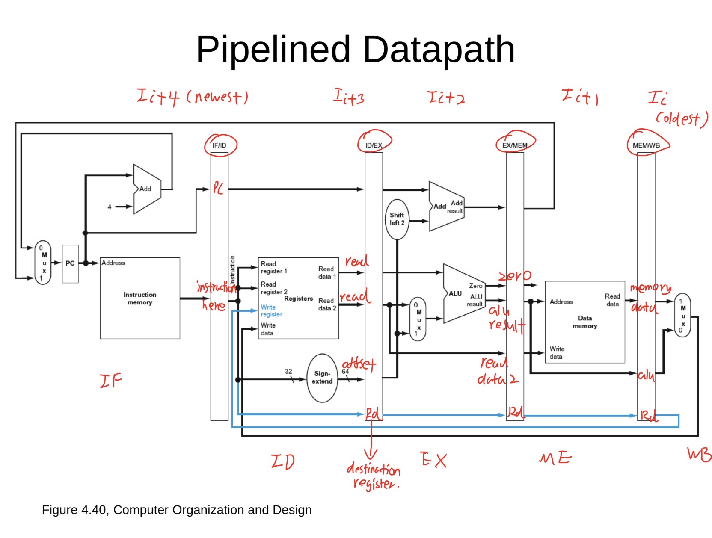
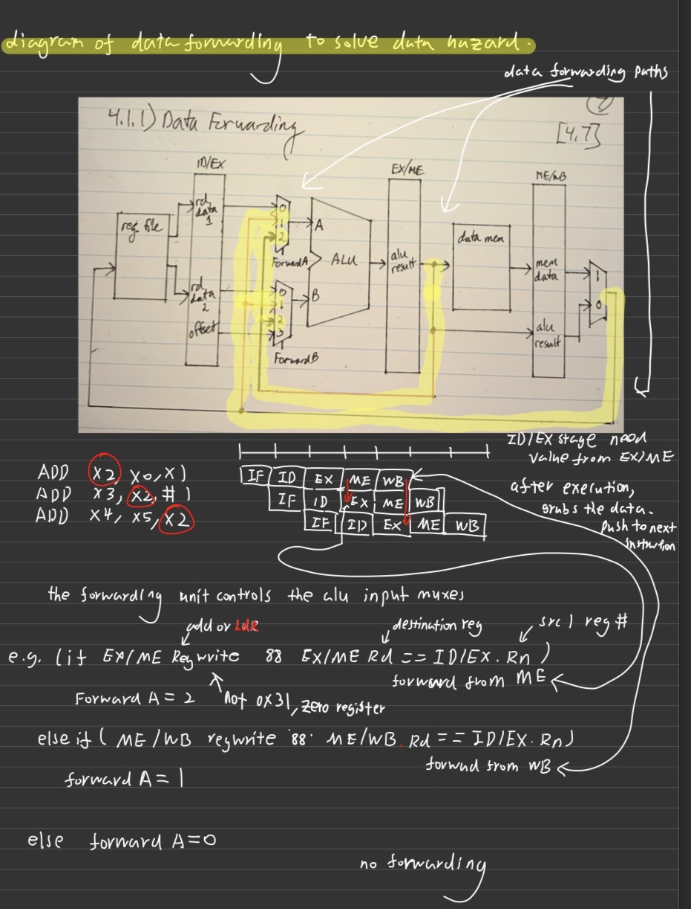
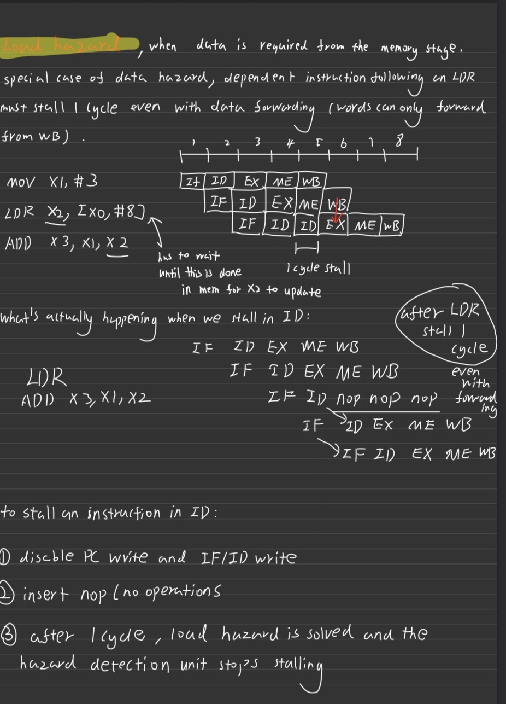
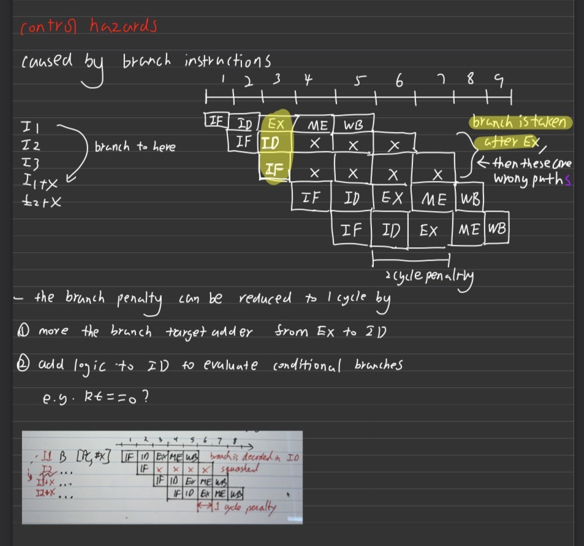
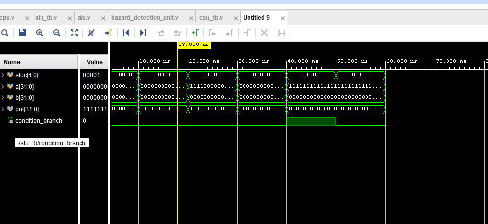
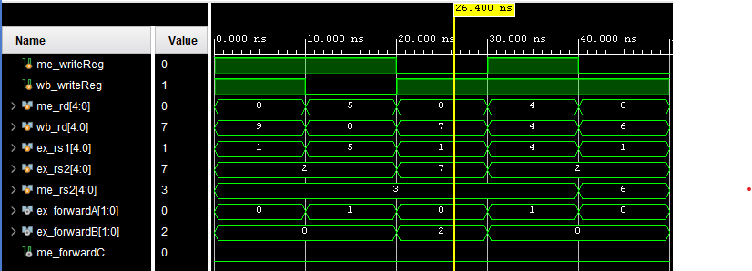
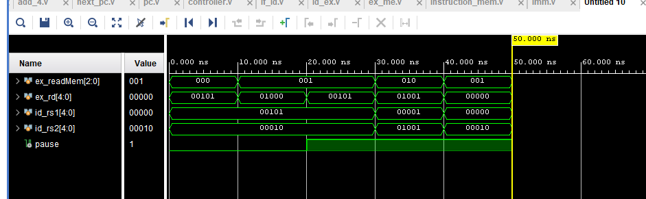
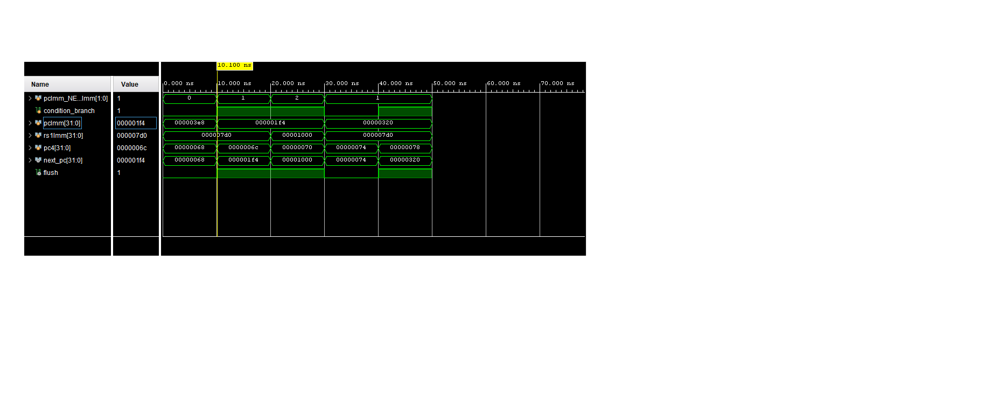

Project Overview
I engineered a full 32-bit RISC-V microprocessor from scratch in Verilog, transitioning from a basic single-cycle architecture to a high-performance 5-Stage Pipeline (Fetch, Decode, Execute, Memory, Writeback). This project demonstrates a deep understanding of digital circuit design, CPU datapath routing, and the physical mitigation of hardware conflicts that arise when multiple instructions are processed simultaneously.

The core engine features a highly integrated Arithmetic Logic Unit (ALU) capable of arithmetic shifts, bitwise operations, and native signed/unsigned branch evaluations. To ensure architectural compliance, I implemented hardware-level tricks, such as forcing the Least Significant Bit (LSB) to zero during JALR instructions for strict memory alignment.

Resolving Data Hazards: The Forwarding Unit
In a pipelined processor, an instruction in the Execute (EX) stage often requires a variable that a preceding instruction has just calculated but has not yet saved to the Register File. If left unhandled, the ALU will compute using stale, garbage data.
To resolve this, I engineered a highly optimized Forwarding Unit. This module acts as a localized bypass network. It continuously monitors the destination registers (rd) of the instructions residing in the Memory (ME) and Writeback (WB) stages. If it detects that an older instruction is about to write to a register needed by the current EX instruction, it seamlessly flips a series of multiplexers to route the fresh data directly into the ALU, completely bypassing the Register File.
// If both ME and WB stages have the required data, ME MUST win.
if (me_writeReg && (me_rd != 5'd0) && (me_rd == ex_rs1)) begin
forward_a = 2'b01; // Forward from ME Stage
end
else if (wb_writeReg && (wb_rd != 5'd0) && (wb_rd == ex_rs1)) begin
forward_a = 2'b10; // Forward from WB Stage
end

A critical architectural detail I implemented was the x0 Hardware Lock. Because register x0 in RISC-V is hardwired to a physical ground (0 Volts), my forwarding logic explicitly checks (rd != 5'd0) to prevent the CPU from accidentally forwarding invalid data if a program erroneously attempts to overwrite the zero register.
Resolving Load-Use Hazards: The Pipeline Brakes
While the Forwarding Unit acts as a "Time Machine" for arithmetic data, it fails when dealing with RAM. If a Load Word (lw) instruction is immediately followed by an instruction that needs that loaded data, forwarding is physically impossible because the RAM chip requires a full clock cycle to retrieve the memory.
To prevent this catastrophic failure, I designed the Hazard Detection Unit. Situated in the Decode stage, it acts as a predictive radar. If it detects a Load instruction in the EX stage whose destination matches the source register of the current ID stage instruction, it slams on the pipeline's brakes:
- PC Freeze: It pulls the
PC_Writesignal low, forcing the Program Counter to hold its current address to prevent dropping the next instruction. - Pipeline Stall: It disables the IF/ID register write-enable, trapping the dependent instruction safely in the Decode stage.
- Bubble Injection: It forces the control multiplexer to output zeroes, sending a harmless "NOP" (No Operation) into the Execute stage, effectively buying the RAM one clock cycle to fetch the data.

Control Flow and Branch Flushing
Branch instructions (like BEQ or BLT) introduce Control Hazards. By the time the ALU determines if a branch condition is true in the Execute stage, two incorrect sequential instructions have already been loaded into the Fetch and Decode stages.
To manage this, I developed a Next_PC routing module. When a branch is taken, this unit calculates the relative jump address, updates the Program Counter, and immediately fires a FLUSH signal. This signal asynchronously clears the IF/ID and ID/EX pipeline walls, incinerating the incorrect instructions before they can alter the processor's state or corrupt memory.

Automated Verification (Self-Checking Testbenches)
Instead of relying on inefficient visual waveform inspection, I elevated the project's reliability by writing Level-2 Self-Checking Testbenches. I created comprehensive Verilog scripts that inject complex edge-case data (such as Double Hazards, negative arithmetic shifts, and memory store-forwarding conflicts) into the modules.
These testbenches utilize conditional logic to automatically cross-reference output signals against expected mathematical results. If a module calculates an incorrect bit, the testbench immediately triggers a $stop command and logs the exact point of failure to the Tcl console, ensuring that the silicon logic is flawlessly verified before integration into the top-level motherboard.



